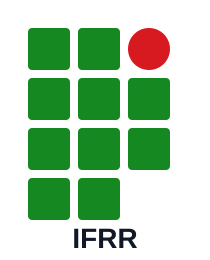

Amazon Brasil
amazon.com.br
92
Quatro auditorias automáticas falharam, além de verificações informativas sobre vídeos, imagens e links.

IFRR · IHCCurso Superior de Tecnologia em Análise e Desenvolvimento de Sistemas
Análise comparativa com Lighthouse, identificação de inadequações e recomendações de melhoria
Etapa 1 · já realizada
Foram auditados três sites com o Lighthouse 13.4.0, com foco na categoria Acessibilidade: Amazon Brasil, SHEIN Brasil e o site desenvolvido pelo grupo na atividade anterior.
Síntese comparativa
As três páginas obtiveram notas altas, mas os relatórios revelam diferenças importantes na natureza e na gravidade das barreiras encontradas.
Quatro auditorias automáticas falharam, além de verificações informativas sobre vídeos, imagens e links.
O relatório aponta contraste insuficiente e registra práticas que ainda exigem atenção ou verificação manual.
Nenhuma falha automática foi registrada. O relatório ainda mantém dez itens para verificação manual.
| Site | Nota | Principais achados | Leitura do resultado |
|---|---|---|---|
| Amazon Brasil | 92 | ARIA incompatível, ordem de títulos, alvo de toque pequeno e divergência entre rótulo visível e nome acessível. | Boa pontuação geral, mas com barreiras relevantes em navegação e tecnologia assistiva. |
| SHEIN Brasil | 97 | Contraste insuficiente; práticas de ARIA e finalidade de links também aparecem para atenção. | Resultado muito alto, com um problema automático de legibilidade claramente sinalizado. |
| Site do grupo | 100 | Sem falhas automáticas; dez verificações continuam dependentes de análise manual. | A auditoria automática foi totalmente aprovada, mas não substitui teste humano. |
Site 1 · Amazon Brasil
A maior quantidade de problemas automáticos entre os três sites avaliados.
Abrir site analisadoO relatório identifica aria-expanded="false" no campo de busca com role="searchbox" e aria-setsize="14" em uma lista onde o atributo não é permitido.
Recomendação: usar somente atributos ARIA previstos para o papel semântico real; quando o HTML nativo já resolve a semântica, evitar ARIA redundante.
O elemento “Conheça-nos” no rodapé aparece como aria-level="6" em uma ordem considerada inválida.
Recomendação: manter uma hierarquia lógica de h1 a h6, sem saltos motivados apenas por aparência visual.
O botão “Expandir conta e listas” foi medido em aproximadamente 8 × 4 px; o relatório cita referência mínima de 24 × 24 px e espaçamento seguro entre alvos.
Recomendação: ampliar a área clicável e garantir espaço ao redor do controle.
Os controles “Carrinho” e “Todos” possuem conteúdo visível que não está integralmente incluído no nome anunciado por tecnologia assistiva.
Recomendação: alinhar aria-label ao texto visível e evitar nomes acessíveis que omitam termos apresentados na tela.
O relatório também solicita verificação de legendas em um vídeo, identifica texto alternativo redundante em 17 imagens e pede consistência de finalidade em links idênticos.
Recomendação: disponibilizar legendas, evitar repetir no alt um texto adjacente idêntico e manter links de mesma descrição com finalidade coerente.
Site 2 · SHEIN Brasil
Nota elevada, com problema de contraste explicitamente registrado pelo relatório fornecido.
Abrir site analisadoO Lighthouse aponta oportunidade de melhorar a legibilidade do conteúdo por meio de uma taxa de contraste adequada.
Recomendação: revisar os pares texto/fundo sinalizados e ajustar cor, peso tipográfico ou fundo até atingir os critérios aplicáveis da WCAG.
O relatório inclui a verificação de uso de papéis ARIA apenas em elementos compatíveis entre as práticas recomendadas.
Recomendação: priorizar elementos semânticos nativos e validar cada role e seus atributos associados.
Também aparece a necessidade de conferir se links com a mesma descrição levam à mesma finalidade ou se a ambiguidade é intencional.
Recomendação: usar textos de link específicos e consistentes, especialmente quando o destino ou a ação é diferente.
Site 3 · atividade do grupo
O relatório registra nota 100 na categoria Acessibilidade, sem falhas automáticas apresentadas.
Mesmo com nota máxima, permanecem itens que uma ferramenta automática não consegue avaliar completamente.
Recomendação: testar ordem do foco, uso somente por teclado, clareza dos estados interativos, leitura com leitor de tela, ampliação de conteúdo e compreensão sem dependência exclusiva de cor.
Esta versão utiliza HTML semântico, link de salto, foco visível, controles de fonte, tema, alto contraste, responsividade e nomes acessíveis em componentes interativos.
Exemplos de correção
Exemplos simplificados para explicar durante a apresentação o tipo de mudança sugerida pelo Lighthouse.
O nome anunciado deve refletir o texto que a pessoa enxerga.
<a href="/carrinho" aria-label="Carrinho, 0 itens">
<span aria-hidden="true">0</span>
Carrinho
</a>A área interativa precisa ser grande o suficiente para toque e navegação motora.
.botao-conta {
min-width: 44px;
min-height: 44px;
padding: 10px 12px;
}O nível do título deve representar a estrutura, não apenas o tamanho visual.
<h1>Página inicial</h1>
<h2>Rodapé institucional</h2>
<h3>Conheça-nos</h3>Evite combinações em que texto e fundo se confundem, principalmente em textos pequenos.
.texto-secundario {
color: #263a33;
background: #ffffff;
}Interatividade obrigatória · Opção C
A turma experimenta a acessibilidade da própria página, em vez de apenas ouvir uma explicação.
1. Clique em “Iniciar desafio”. 2. Tire a mão do mouse. 3. Use somente Tab e Shift + Tab. 4. Encontre e ative o link “Abrir pasta de relatórios”.
Evidências da auditoria
O trabalho exige um link direto para a pasta pública contendo o arquivo compactado com os três relatórios do Lighthouse.
Amazon Brasil · SHEIN Brasil · Site do grupo
REPORTS_URL no final deste HTML pelo link público do Google Drive, OneDrive ou serviço escolhido.Conclusão
Os resultados mostram que o Lighthouse é eficiente para localizar problemas técnicos recorrentes, mas a acessibilidade real depende também de navegação, compreensão, contexto, tecnologia assistiva e experiência de pessoas reais.